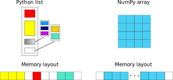

High Performance Data Analytics in Python¶
Scientists, engineers and professionals from many sectors are seeing an enormous growth in the size and number of datasets relevant to their domains. Professional titles have emerged to describe specialists working with data, such as data scientists and data engineers, but also other experts are finding it necessary to learn tools and techniques to work with big data. Typical tasks include preprocessing, analysing, modeling and visualising data.
Python is an industry-standard programming language for working with data on all levels of the data analytics pipeline. This is in large part because of the rich ecosystem of libraries ranging from generic numerical libraries to special-purpose and/or domain-specific packages, often supported by large developer communities and stable funding sources.
This module will give an overview of working with research data in Python using general libraries for storing, processing, analysing and sharing data. The focus is on high performance. After covering tools for performant processing on single workstations the focus shifts to profiling and optimising, parallel and distributed computing.
Prerequisites
Basic experience with Python
Basic experience in working in a Linux-like terminal
Some prior experience in working with large or small datasets
Setting Up Programming Environment¶
In order to run hands-on exercises in this course, you need the Python package and several depenencies.
If you use your own computer to run exercises, you should follow the instructions described below to install relevant packages and setup specific programming environment before running hands-on exercises.
You can use an HPC cluster if you have access to one to run hands-on exercises. Below we provide a short description to login to the LUMI cluster, load the modules, and run interactive/batch jobs.
Local Installation¶
Install miniforge¶
If you already have a preferred way to manage Python versions and libraries, you can stick to that. If not, we recommend that you install Python3 and all libraries using Miniforge, a free minimal installer for the package, dependency and environment manager conda.
Please follow the installation instructions to install Miniforge.
Make sure that conda is correctly installed:
$ conda --version
conda 24.11.2
Install python programming environment on personal computer¶
For Mac users
With conda installed, install the required dependencies by running:
$ conda env create --yes -f https://raw.githubusercontent.com/ENCCS/hpda-python/main/content/env/environment.yml
This will create a new environment pyhpda which you need to activate by:
$ conda activate pyhpda
Ensure that the Python version is fairly recent:
$ python --version
Python 3.12.8
Finally, open Jupyter-Lab in your browser:
$ jupyter-lab
If you use VS code, you can come to the installed pyhpda programming environment via choosing Select Kernel ar the upper right corner, Python Environents and you will find the pre-installed pyhpda programming environment.
For Linux users
Please provide detailed instructures for linux users to install packages.
For Windows users
Please provide detailed instructures for windows users to install packages.
Using HPC Cluster¶
LUMI¶
Login to LUMI cluster¶
Follow practical instructions HERE to get your access to LUMI cluster.
On Step 5, you can login to LUMI cluster through terminal.
On Step 6, you can login to LUMI cluster from the web-interface.
Running jobs on LUMI cluster¶
If you want to run an interactive job asking for 1 node, 1 GPU, and 1 hour:
$ salloc -A project_XXXXX -N 1 -t 1:00:00 -p standard-g --gpus-per-node=1
$ srun <some-command>
Exit interactive allocation with exit.
You can also submit your job with a batch script submit.sh:
#!/bin/bash -l
#SBATCH --account=project_XXXXX
#SBATCH --job-name=example-job
#SBATCH --output=examplejob.o%j
#SBATCH --error=examplejob.e%j
#SBATCH --partition=standard-g
#SBATCH --nodes=1
#SBATCH --gpus-per-node=1
#SBATCH --ntasks-per-node=1
#SBATCH --time=1:00:00
srun <some_command>
Some useful commands are listed below:
Submit the job:
sbatch submit.shMonitor your job:
squeue --meKill job:
scancel <JOB_ID>
Using pyhpda programming environment on LUMI cluster¶
We have installed the pyhpda programming environment on LUMI. You can follow instructions below to activate it and login to LUMI cluster, either via terminal or through the web-interface.
Login to LUMI cluster via terminal and then the commands below to check and activate the pyhpda environment. You should get similar output as shown below.
$ /projappl/projecXXXXX10/miniconda3/bin/conda init
$ source ~/.bashrc
$ which conda
/project/project_XXXXX/miniconda3/condabin/conda
$ conda activate pyhpda
$ which python
/project/project_XXXXX/miniconda3/envs/pyhpda/bin/python
Login to LUMI cluster via web-interface and then select Jupyter (not Jupyter for courses) icon for an interactive session, and provide the following values in the form to launch the jupyter lab app.
Project:
project_XXXXXPartition:
interactiveNumber of CPU cores:
2Time:
4:00:00Working directory:
/projappl/project_XXXXXPython:
CustomPath to python:
/project/project_XXXXX/miniconda3/envs/pyhpda/bin/pythoncheckfor Enable system installed packages on venv creationcheckfor Enable packages under ~/.local/lib on venv startClick the
Launchbutton, wait for minutes until your requested session was created.Click the
Connect to Jupyterbutton, and then select the Python kernelPython 3 (venv)for the created Jupyter notebooks.
Leonardo Booster¶
Login to Leonardo Booster cluster¶
Follow instructions at HERE to get your access to Leonardo Booster cluster.
Running jobs on Leonardo Booster cluster¶
Here are instructions to run jobs on Leonardo Booster cluster
xxx
xxx
Using pyhpda programming environment on Leonardo Booster cluster¶
Here are instructions to install the pyhpda programming environment on Leonardo Booster cluster
xxx
xxx
Motivation¶
This episode provides a broad overview of this course and the main motivation to attend this course.
Objectives
What is big data
What is the Python programming environment and the ecosystem
What you will learn during this course
Instructor note
20 min teaching/type-along
0 min exercising
Big Data¶
How large is your data?
How large is the data you are working with?
Are you experiencing performance bottlenecks when you try to analyse it?
“Big data refers to data sets that are too large or complex to be dealt with by traditional data-processing application software. […] Big data analysis challenges include capturing data, data storage, data analysis, search, sharing, transfer, visualization, querying, updating, information privacy, and data source.” (from Wikipedia)
“Big data” is a current buzzword used heavily in the tech industry, but many scientific research communities are increasingly adopting high-throughput data production methods which lead to very large datasets. One driving force behind this development is the advent of powerful machine learning methods which enable researchers to derive novel scientific insights from large datasets. Another is the strong development of high performance computing (HPC) hardware and the accompanying development of software libraries and packages which can efficiently take advantage of the hardware.
This module focuses on high-performance data analytics (HPDA), a subset of high-performance computing which focuses on working with large data. The data can come from either computer models and simulations or from experiments and observations, and the goal is to preprocess, analyse and visualise it to generate scientific results.
The video shown below provide more descriptions of the big data.
Instructor note
Alternative method to embed videos
from IPython.display import YouTubeVideo
YouTubeVideo('qydP7cOH4qc', width=560, height=315)
It is also possible to embed local videos using IPython.display.Video.
Python¶
Discussion
Performance bottlenecks in Python
Have you ever written Python scripts that look something like the one below?
Compared to C/C++/Fortran, this for-loop will probably be orders of magnitude slower
f = open("mydata.dat", "r")
for line in f.readlines():
fields = line.split(",")
x, y, z = fields[1], fields[2], fields[3]
# some analysis with x, y and z
f.close()
Despite early design choices of the Python language which made it significantly slower than conventional HPC languages, a rich and growing ecosystem of open source libraries have established Python as an industry-standard programming language for working with data on all levels of the data analytics pipeline. These range from generic numerical libraries to special-purpose and/or domain-specific packages. This module is focused on introducing modern packages from the Python ecosystem to work with large data. Specifically, we will learn to use:
Numpy
Scipy
Pandas
Xarray
Numba
Cython
multithreading
multiprocessing
Dask
What You Will Learn¶
This module provides a broad overview of methods to work with large datasets using tools and libraries from the Python ecosystem. Since this field is fairly extensive we will not have time to go into much depth. Instead, the objective is to expose just enough details on each topic for you to get a good idea of the big picture and an understanding of what combination of tools and libraries will work well for your particular use case.
Specifically, this module covers:
Tools for efficiently storing data and writing/reading data to/from disk
How to share datasets and mint digital object identifiers (DOI)
Main methods of efficiently working with tabular data and multidimensional arrays
How to measure performance and boost performance of time consuming Python functions
Various methods to parallelise Python code
This module does not cover the following topics which may be of interest to the reader. Please refer to the links provided below to the other course materials.
Keypoints
Datasets are getting larger across nearly all scientific and engineering domains
The Python ecosystem has many libraries and packages for working with big data efficiently
Efficient Array Computing¶
This episode introduces how to write high-performance numerical code in Python packages (Numpy, Pandas, and Scipy) by leveraging tools and libraries designed to optimize computation speed and memory usage. It explores strategies such as vectorization with NumPy, just-in-time compilation using Numba, and parallelization techniques that can significantly reduce execution time. These methods help Python developers overcome the traditional performance limitations of the language, making it suitable for intensive scientific and engineering applications.
Objectives
Understand limitations of Python’s standard library for large data processing
Understand the logic behind NumPy ndarrays and learn to use some NumPy numerical computing tools
Learn to use data structures and analysis tools from Panda
Instructor note
25 min teaching/type-along
25 min exercising
Why can Python be slow?¶
Computer programs are nowadays practically always written in a high-level human readable programming language and then translated to the actual machine instructions that a processor understands. There are two main approaches for this translation:
For compiled programming languages, the translation is done by a compiler before the execution of the program
For interpreted languages, the translation is done by an interpreter during the execution of the program
NumPy¶
NumPy is based on well-optimized C code, which gives much better performace than regular Python. In particular, by using homogeneous data structures, NumPy vectorizes mathematical operations where fast pre-compiled code can be applied to a sequence of data instead of using traditional for loops.
Arrays¶
The core of NumPy is the NumPy ndarray (n-dimensional array). Compared to a Python list, an ndarray is similar in terms of serving as a data container. Some differences between the two are:
ndarrays can have multiple dimensions, e.g. a 1-D array is a vector, a 2-D array is a matrix
ndarrays are fast only when all data elements are of the same type

Creating NumPy arrays¶
One way to create a NumPy array is to convert from a Python list, but make sure that the list is homogeneous (contains same data type) otherwise performace will be downgraded. Since appending elements to an existing array is slow, it is a common practice to preallocate the necessary space with np.zeros or np.empty when converting from a Python list is not possible.
Code for demonstration
import numpy as np
a = np.array((1, 2, 3, 4), float)
print(f"a = {a}\n")
# array([ 1., 2., 3., 4.])
list1 = [[1, 2, 3], [4, 5, 6]]
mat = np.array(list1, complex)
# create complex array, with imaginary part equal to zero
print(f"mat = \n {mat} \n")
# array([[ 1.+0.j, 2.+0.j, 3.+0.j],
# [ 4.+0.j, 5.+0.j, 6.+0.j]])
print(f"mat.shape={mat.shape}, mat.size={mat.size}")
# mat.shape=(2, 3), mat.size=6
Caution
You should copy the code above to a separate code block, or change its cell type from from Markdown to Code.
arange and linspace can generate ranges of numbers:
import numpy as np
a = np.arange(10)
print(a)
[0 1 2 3 4 5 6 7 8 9]
b = np.arange(0.1, 0.2, 0.02)
print(b)
[0.1 0.12 0.14 0.16 0.18]
c = np.linspace(-4.5, 4.5, 5)
print(c)
[-4.5 -2.25 0. 2.25 4.5 ]
Array operations and manipulations¶
All the familiar arithmetic operators in NumPy are applied elementwise:
# 1D example
import numpy as np
a = np.array([1, 2, 3])
b = np.array([4, 5, 6])
print(f" a + b = {a + b}\n a / b = {a / b}")
a + b = [5 7 9]
a / b = [0.25 0.4 0.5 ]


Exercise
Run the code below to get familiar with indexing in a 2D example.
# 2D example
import numpy as np
a = np.array([[1, 2, 3], [4, 5, 6]])
b = np.array([[10, 10, 10], [10, 10, 10]])
print(a+b)
Note
You can either copy the code from the cell above or download the code example from HERE.
Solution
import numpy as np
a = np.array([[1, 2, 3], [4, 5, 6]])
b = np.array([[10, 10, 10], [10, 10, 10]])
print(a+b)
[[11 12 13]
[14 15 16]]

Array indexing¶
Basic indexing is similar to Python lists. Note that advanced indexing creates copies of arrays.
# 1D example
import numpy as np
data = np.array([1,2,3,4,5,6,7,8])
# integer indexing
print("Integer indexing")
print(f"data = {data}")
print(f"data[3] = {data[3]}")
print(f"data[0:2] = {data[0:2]}")
print(f"data[-2] = {data[-2]}")
print(f"data[::-4] = {data[::-4]}")
# fancy indexing
print("\nFancy indexing")
print(f"data[[1,6,3]] = {data[[1,6,3]]}")
# boolean indexing
print("\nBoolean indexing")
print(f"data[data>5] = {data[data>5]}")
Integer indexing
data = [1 2 3 4 5 6 7 8]
data[3] = 4
data[0:2] = [1 2]
data[-2] = 7
data[::-4] = [8 4]
Fancy indexing
data[[1,6,3]] = [2 7 4]
Boolean indexing
data[data>5] = [6 7 8]

Exercise
Run the code below to get familiar with indexing in a 2D example.
# 2D example
data = np.array([[1, 2, 3, 4],[5, 6, 7, 8],[9, 10, 11, 12]])
# integer indexing
print("Integer indexing")
print(f"data[1] = {data[1]}")
print(f"data[:, 1] = {data[:, 1]}")
print(f"data[1:3, 2:4] = {data[1:3, 2:4]}")
# fancy indexing
print("\nFancy indexing")
print(f"data[[0,2,1], [2,3,0]] = {data[[0,2,1], [2,3,0]]}")
# boolean indexing
print("\nBoolean indexing")
print(f"data[data>10] = {data[data>10]}")
Caution
Again, you should move the code above to a separate code block, or change its cell type from from Markdown to Code.
I/O with NumPy¶
Numpy provides functions for reading from/writing to files. Both ASCII and binary formats are supported with the CSV and npy/npz formats.
CSV
The numpy.loadtxt() and numpy.savetxt() functions can be used. They save in a regular column layout and can deal with different delimiters, column titles and numerical representations.
a = np.array([1, 2, 3, 4])
np.savetxt("my_array.csv", a)
b = np.loadtxt("my_array.csv")
print(a == b)
[ True True True True]
Attention
If you get an eror like xxx, you should import numpy before the first line import numpy as np.
Binary
The npy format is a binary format used to dump arrays of any shape. Several arrays can be saved into a single npz file, which is simply a zipped collection of different npy files. All the arrays to be saved into a npz file can be passed as kwargs to the numpy.savez() function. The data can then be recovered using the numpy.load() method, which returns a dictionary-like object in which each key points to one of the arrays.
a = np.array([1, 2, 3, 4])
b = np.array([5, 6, 7, 8])
np.savez("my_arrays.npz", array_1=a, array_2=b)
data = np.load("my_arrays.npz")
print(data['array_1'] == a) # [ True True True True]
print(data['array_2'] == b) # [ True True True True]
[ True True True True]
[ True True True True]
Random numbers¶
The module numpy.random provides several functions for constructing random arrays
random(): uniform random numbersnormal(): normal distributionchoice(): random sample from given array…
print(np.random.random((2,2)),'\n')
[[0.9771641 0.35960723]
[0.80744122 0.04595658]]
print(np.random.choice(np.arange(4), 10))
[2 2 2 1 2 3 3 0 3 3]
Warning
You might get different results from the above code example.
Pandas¶
Pandas is a Python package that provides high-performance and easy to use data structures and data analysis tools. The core data structures of Pandas are Series and Dataframes.
a Pandas
seriesis a one-dimensional NumPy array with an index which we could use to access the dataa
dataframeconsist of a table of values with labels for each row and column. A dataframe can combine multiple data types, such as numbers and text, but the data in each column is of the same type.each column of a dataframe is a series object - a dataframe is thus a collection of series.

Data analysis workflow¶
Pandas is a powerful tool for many steps of a data analysis pipeline:
To explore some of the capabilities, we start with an example dataset containing the passenger list from the Titanic, which is often used in Kaggle competitions and data science tutorials. First step is to load Pandas and download the dataset into a dataframe.
import pandas as pd
url = "https://raw.githubusercontent.com/pandas-dev/pandas/master/doc/data/titanic.csv"
# set the index to the "Name" column
titanic = pd.read_csv(url, index_col="Name")
Note
Pandas also understands multiple other formats, for example read_excel(), read_hdf(), read_json(), etc. (and corresponding methods to write to file: to_csv(), to_excel(), to_hdf(), to_json(), …)…)
We can now view the dataframe to get an idea of what it contains and print some summary statistics of its numerical data:
# print the first 5 lines of the dataframe
print(titanic.head())
# print some information about the columns
print(titanic.info())
# print summary statistics for each column
print(titanic.describe())
Missing/invalid data¶
What if your dataset has missing data? Pandas uses the value np.nan to represent missing data, and by default does not include it in any computations. We can find missing values, drop them from our dataframe, replace them with any value we like or do forward or backward filling.
titanic.isna() # returns boolean mask of NaN values
print(titanic.dropna()) # drop missing values
print(titanic.dropna(how="any")) # or how="all"
print(titanic.dropna(subset=["Cabin"])) # only drop NaNs from one column
print(titanic.fillna(0)) # replace NaNs with zero
Scipy¶
SciPy is a library that builds on top of NumPy. It contains a lot of interfaces to battle-tested numerical routines written in Fortran or C, as well as Python implementations of many common algorithms.
Let us look more closely into one out of the countless useful functions available in SciPy. curve_fit() is a non-linear least squares fitting function. NumPy has least-squares fitting via the np.linalg.lstsq() function, but we need to go to SciPy to find non-linear curve fitting. This example fits a power-law to a vector.
import numpy as np
from scipy.optimize import curve_fit
def powerlaw(x, A, s):
return A * np.power(x, s)
# data
Y = np.array([9115, 8368, 7711, 5480, 3492, 3376, 2884, 2792, 2703, 2701])
X = np.arange(Y.shape[0]) + 1.0
# initial guess for variables
p0 = [100, -1]
# fit data
params, cov = curve_fit(f=powerlaw, xdata=X, ydata=Y, p0=p0, bounds=(-np.inf, np.inf))
print("A =", params[0], "+/-", cov[0,0]**0.5)
print("s =", params[1], "+/-", cov[1,1]**0.5)
A = 10240.788123784849 +/- 984.5879720590807
s = -0.5372630409593478 +/- 0.08171727565402351
# optionally plot
import matplotlib.pyplot as plt
plt.scatter(X,Y, label="raw data")
plt.plot(X, powerlaw(X, params[0], params[1]), label="power law")
plt.legend()
plt.show()
Exercises¶
Working effectively with dataframes
Recall the curve_fit() method from SciPy discussed above, and imagine that we want to fit powerlaws to every row in a large dataframe. How can this be done effectively?
First define the powerlaw() function and another function for fitting a row of numbers:
import numpy as np
import pandas as pd
from scipy.optimize import curve_fit
def powerlaw(x, A, s):
return A * np.power(x, s)
def fit_powerlaw(row):
X = np.arange(row.shape[0]) + 1.0
params, cov = curve_fit(f=powerlaw, xdata=X, ydata=row, p0=[100, -1], bounds=(-np.inf, np.inf))
return params[1]
Next load a dataset with multiple rows similar to the one used in the example above:
df = pd.read_csv("https://raw.githubusercontent.com/ENCCS/hpda-python/main/content/data/results.csv")
# print first few rows
df.head()
Now consider these four different ways of fitting a powerlaw to each row of the dataframe:
# 1. Loop
powers = []
for row_indx in range(df.shape[0]):
row = df.iloc[row_indx,1:]
p = fit_powerlaw(row)
powers.append(p)
# 2. `iterrows()
powers = []
for row_indx,row in df.iterrows():
p = fit_powerlaw(row[1:])
powers.append(p)
# 3. `apply()
powers = df.iloc[:,1:].apply(fit_powerlaw, axis=1)
# 4. `apply()` with `raw=True`
# raw=True passes numpy ndarrays instead of series to fit_powerlaw
powers = df.iloc[:,1:].apply(fit_powerlaw, axis=1, raw=True)
Which one do you think is most efficient? You can measure the execution time by adding %%timeit to the first line of a Jupyter code cell. More on timing and profiling in a later episode.
Working effectively with dataframes
The execution time for four different methods are described below. Note that you may get different numbers when you run these examples.
# 1 Loop
%%timeit
powers = []
for row_indx in range(df.shape[0]):
row = df.iloc[row_indx,1:]
p = fit_powerlaw(row)
powers.append(p)
# 33.6 ms ± 682 µs per loop (mean ± std. dev. of 7 runs, 10 loops each)
# 2. `iterrows()`
%%timeit
powers = []
for row_indx,row in df.iterrows():
p = fit_powerlaw(row[1:])
powers.append(p)
# 28.7 ms ± 947 µs per loop (mean ± std. dev. of 7 runs, 10 loops each)
# 3. `apply()`
%%timeit
powers = df.iloc[:,1:].apply(fit_powerlaw, axis=1)
# 26.1 ms ± 1.19 ms per loop (mean ± std. dev. of 7 runs, 10 loops each)
# 4. `apply()` with `raw=True`
%%timeit
powers = df.iloc[:,1:].apply(fit_powerlaw, axis=1, raw=True)
# 24 ms ± 1.27 ms per loop (mean ± std. dev. of 7 runs, 10 loops each)
Further analysis of Titanic passenger list dataset
Consider the titanic dataset.
If you haven’t done so already, load it into a dataframe before the exercises:
import pandas as pd; url = "https://raw.githubusercontent.com/pandas-dev/pandas/master/doc/data/titanic.csv"; titanic = pd.read_csv(url, index_col="Name")
Compute the mean age of the first 10 passengers by slicing and the
meanmethodUsing boolean indexing, compute the survival rate (mean of “Survived” values) among passengers over and under the average age. Now investigate the family size of the passengers (i.e. the “SibSp” column):
What different family sizes exist in the passenger list?
Hint: try the
unique()method
What are the names of the people in the largest family group?
(Advanced) Create histograms showing the distribution of family sizes for passengers split by the fare, i.e. one group of high-fare passengers (where the fare is above average) and one for low-fare passengers
Hint: instead of an existing column name, you can give a lambda function as a parameter to
histto compute a value on the fly. For examplelambda x: "Poor" if titanic["Fare"].loc[x] < titanic["Fare"].mean() else "Rich").
Solution
Mean age of the first 10 passengers:
titanic.iloc[:10,:]["Age"].mean()ortitanic.iloc[:10,4].mean()ortitanic.loc[:"Nasser, Mrs. Nicholas (Adele Achem)", "Age"].mean()
Survival rate among passengers over and under average age:
titanic[titanic["Age"] > titanic["Age"].mean()]["Survived"].mean()andtitanic[titanic["Age"] < titanic["Age"].mean()]["Survived"].mean()
Existing family sizes:
titanic["SibSp"].unique()Names of members of largest family(ies):
titanic[titanic["SibSp"] == 8].indextitanic.hist("SibSp", lambda x: "Poor" if titanic["Fare"].loc[x] < titanic["Fare"].mean() else "Rich", rwidth=0.9)
Keypoints
NumPy provides a static array data structure, fast mathematical operations for arrays and tools for linear algebra and random numbers
Pandas dataframes are a good data structure for tabular data
Dataframes allow both simple and advanced analysis in very compact form
SciPy contains a lot of interfaces to battle-tested numerical routines
Efficient Array Computing (in Markdown)¶
Caution
The content below is nearly identical to the previous episode, and only the source file differs. This page is generated from an markdown file.
This episode introduces how to write high-performance numerical code in Python packages (Numpy, Pandas, and Scipy) by leveraging tools and libraries designed to optimize computation speed and memory usage. It explores strategies such as vectorization with NumPy, just-in-time compilation using Numba, and parallelization techniques that can significantly reduce execution time. These methods help Python developers overcome the traditional performance limitations of the language, making it suitable for intensive scientific and engineering applications.
Objectives
Understand limitations of Python’s standard library for large data processing
Understand the logic behind NumPy ndarrays and learn to use some NumPy numerical computing tools
Learn to use data structures and analysis tools from Panda
Instructor note
25 min teaching/type-along
25 min exercising
Why can Python be slow?¶
Computer programs are nowadays practically always written in a high-level human readable programming language and then translated to the actual machine instructions that a processor understands. There are two main approaches for this translation:
For compiled programming languages, the translation is done by a compiler before the execution of the program
For interpreted languages, the translation is done by an interpreter during the execution of the program
NumPy¶
NumPy is based on well-optimized C code, which gives much better performace than regular Python. In particular, by using homogeneous data structures, NumPy vectorizes mathematical operations where fast pre-compiled code can be applied to a sequence of data instead of using traditional for loops.
Arrays¶
The core of NumPy is the NumPy ndarray (n-dimensional array). Compared to a Python list, an ndarray is similar in terms of serving as a data container. Some differences between the two are:
ndarrays can have multiple dimensions, e.g. a 1-D array is a vector, a 2-D array is a matrix
ndarrays are fast only when all data elements are of the same type
Creating NumPy arrays¶
One way to create a NumPy array is to convert from a Python list, but make sure that the list is homogeneous (contains same data type) otherwise performace will be downgraded. Since appending elements to an existing array is slow, it is a common practice to preallocate the necessary space with np.zeros or np.empty when converting from a Python list is not possible.
Code for demonstration
import numpy as np
a = np.array((1, 2, 3, 4), float)
print(f"a = {a}\n")
# array([ 1., 2., 3., 4.])
list1 = [[1, 2, 3], [4, 5, 6]]
mat = np.array(list1, complex)
# create complex array, with imaginary part equal to zero
print(f"mat = \n {mat} \n")
# array([[ 1.+0.j, 2.+0.j, 3.+0.j],
# [ 4.+0.j, 5.+0.j, 6.+0.j]])
print(f"mat.shape={mat.shape}, mat.size={mat.size}")
# mat.shape=(2, 3), mat.size=6
Caution
You should copy the code above to a separate code block, or change its cell type from from Markdown to Code.
arange and linspace can generate ranges of numbers:
import numpy as np
a = np.arange(10)
print(a)
[0 1 2 3 4 5 6 7 8 9]
b = np.arange(0.1, 0.2, 0.02)
print(b)
[0.1 0.12 0.14 0.16 0.18]
c = np.linspace(-4.5, 4.5, 5)
print(c)
[-4.5 -2.25 0. 2.25 4.5 ]
Array operations and manipulations¶
All the familiar arithmetic operators in NumPy are applied elementwise:
# 1D example
import numpy as np
a = np.array([1, 2, 3])
b = np.array([4, 5, 6])
print(f" a + b = {a + b}\n a / b = {a / b}")
a + b = [5 7 9]
a / b = [0.25 0.4 0.5 ]
Exercise
Run the code below to get familiar with indexing in a 2D example.
# 2D example
import numpy as np
a = np.array([[1, 2, 3], [4, 5, 6]])
b = np.array([[10, 10, 10], [10, 10, 10]])
print(a+b)
Note
You can either copy the code from the cell above or download the code example from HERE.
Solution
import numpy as np
a = np.array([[1, 2, 3], [4, 5, 6]])
b = np.array([[10, 10, 10], [10, 10, 10]])
print(a+b)
[[11 12 13]
[14 15 16]]
Array indexing¶
Basic indexing is similar to Python lists. Note that advanced indexing creates copies of arrays.
# 1D example
import numpy as np
data = np.array([1,2,3,4,5,6,7,8])
# integer indexing
print("Integer indexing")
print(f"data = {data}")
print(f"data[3] = {data[3]}")
print(f"data[0:2] = {data[0:2]}")
print(f"data[-2] = {data[-2]}")
print(f"data[::-4] = {data[::-4]}")
# fancy indexing
print("\nFancy indexing")
print(f"data[[1,6,3]] = {data[[1,6,3]]}")
# boolean indexing
print("\nBoolean indexing")
print(f"data[data>5] = {data[data>5]}")
Integer indexing
data = [1 2 3 4 5 6 7 8]
data[3] = 4
data[0:2] = [1 2]
data[-2] = 7
data[::-4] = [8 4]
Fancy indexing
data[[1,6,3]] = [2 7 4]
Boolean indexing
data[data>5] = [6 7 8]
Exercise
Run the code below to get familiar with indexing in a 2D example.
# 2D example
data = np.array([[1, 2, 3, 4],[5, 6, 7, 8],[9, 10, 11, 12]])
# integer indexing
print("Integer indexing")
print(f"data[1] = {data[1]}")
print(f"data[:, 1] = {data[:, 1]}")
print(f"data[1:3, 2:4] = {data[1:3, 2:4]}")
# fancy indexing
print("\nFancy indexing")
print(f"data[[0,2,1], [2,3,0]] = {data[[0,2,1], [2,3,0]]}")
# boolean indexing
print("\nBoolean indexing")
print(f"data[data>10] = {data[data>10]}")
Caution
Again, you should move the code above to a separate code block, or change its cell type from from Markdown to Code.
I/O with NumPy¶
Numpy provides functions for reading from/writing to files. Both ASCII and binary formats are supported with the CSV and npy/npz formats.
CSV
The numpy.loadtxt() and numpy.savetxt() functions can be used. They save in a regular column layout and can deal with different delimiters, column titles and numerical representations.
a = np.array([1, 2, 3, 4])
np.savetxt("my_array.csv", a)
b = np.loadtxt("my_array.csv")
print(a == b)
[ True True True True]
Attention
If you get an eror like xxx, you should import numpy before the first line import numpy as np.
Binary
The npy format is a binary format used to dump arrays of any shape. Several arrays can be saved into a single npz file, which is simply a zipped collection of different npy files. All the arrays to be saved into a npz file can be passed as kwargs to the numpy.savez() function. The data can then be recovered using the numpy.load() method, which returns a dictionary-like object in which each key points to one of the arrays.
a = np.array([1, 2, 3, 4])
b = np.array([5, 6, 7, 8])
np.savez("my_arrays.npz", array_1=a, array_2=b)
data = np.load("my_arrays.npz")
print(data['array_1'] == a) # [ True True True True]
print(data['array_2'] == b) # [ True True True True]
[ True True True True]
[ True True True True]
Random numbers¶
The module numpy.random provides several functions for constructing random arrays
random(): uniform random numbersnormal(): normal distributionchoice(): random sample from given array…
print(np.random.random((2,2)),'\n')
[[0.59430762 0.58960073]
[0.63036334 0.52887152]]
print(np.random.choice(np.arange(4), 10))
[3 1 3 0 3 1 3 3 0 2]
Warning
You might get different results from the above code example.
Pandas¶
Pandas is a Python package that provides high-performance and easy to use data structures and data analysis tools. The core data structures of Pandas are Series and Dataframes.
a Pandas
seriesis a one-dimensional NumPy array with an index which we could use to access the dataa
dataframeconsist of a table of values with labels for each row and column. A dataframe can combine multiple data types, such as numbers and text, but the data in each column is of the same type.each column of a dataframe is a series object - a dataframe is thus a collection of series.
Data analysis workflow¶
Pandas is a powerful tool for many steps of a data analysis pipeline:
To explore some of the capabilities, we start with an example dataset containing the passenger list from the Titanic, which is often used in Kaggle competitions and data science tutorials. First step is to load Pandas and download the dataset into a dataframe.
import pandas as pd
url = "https://raw.githubusercontent.com/pandas-dev/pandas/master/doc/data/titanic.csv"
# set the index to the "Name" column
titanic = pd.read_csv(url, index_col="Name")
Note
Pandas also understands multiple other formats, for example read_excel(), read_hdf(), read_json(), etc. (and corresponding methods to write to file: to_csv(), to_excel(), to_hdf(), to_json(), …)…)
We can now view the dataframe to get an idea of what it contains and print some summary statistics of its numerical data:
# print the first 5 lines of the dataframe
print(titanic.head())
# print some information about the columns
print(titanic.info())
# print summary statistics for each column
print(titanic.describe())
Missing/invalid data¶
What if your dataset has missing data? Pandas uses the value np.nan to represent missing data, and by default does not include it in any computations. We can find missing values, drop them from our dataframe, replace them with any value we like or do forward or backward filling.
titanic.isna() # returns boolean mask of NaN values
print(titanic.dropna()) # drop missing values
print(titanic.dropna(how="any")) # or how="all"
print(titanic.dropna(subset=["Cabin"])) # only drop NaNs from one column
print(titanic.fillna(0)) # replace NaNs with zero
Scipy¶
SciPy is a library that builds on top of NumPy. It contains a lot of interfaces to battle-tested numerical routines written in Fortran or C, as well as Python implementations of many common algorithms.
Let us look more closely into one out of the countless useful functions available in SciPy. curve_fit() is a non-linear least squares fitting function. NumPy has least-squares fitting via the np.linalg.lstsq() function, but we need to go to SciPy to find non-linear curve fitting. This example fits a power-law to a vector.
import numpy as np
from scipy.optimize import curve_fit
def powerlaw(x, A, s):
return A * np.power(x, s)
# data
Y = np.array([9115, 8368, 7711, 5480, 3492, 3376, 2884, 2792, 2703, 2701])
X = np.arange(Y.shape[0]) + 1.0
# initial guess for variables
p0 = [100, -1]
# fit data
params, cov = curve_fit(f=powerlaw, xdata=X, ydata=Y, p0=p0, bounds=(-np.inf, np.inf))
print("A =", params[0], "+/-", cov[0,0]**0.5)
print("s =", params[1], "+/-", cov[1,1]**0.5)
A = 10240.788123784849 +/- 984.5879720590807
s = -0.5372630409593478 +/- 0.08171727565402351
# optionally plot
import pandas as pd
import hvplot.pandas
data = pd.DataFrame({
"x": X,
"raw data": Y,
"power law": powerlaw(X, params[0], params[1])
})
scatter = data["raw data"].hvplot(kind="scatter", color="red")
line = data["power law"].hvplot()
(scatter * line)
Exercises¶
Working effectively with dataframes
Recall the curve_fit() method from SciPy discussed above, and imagine that we want to fit powerlaws to every row in a large dataframe. How can this be done effectively?
First define the powerlaw() function and another function for fitting a row of numbers:
import numpy as np
import pandas as pd
from scipy.optimize import curve_fit
def powerlaw(x, A, s):
return A * np.power(x, s)
def fit_powerlaw(row):
X = np.arange(row.shape[0]) + 1.0
params, cov = curve_fit(f=powerlaw, xdata=X, ydata=row, p0=[100, -1], bounds=(-np.inf, np.inf))
return params[1]
Next load a dataset with multiple rows similar to the one used in the example above:
df = pd.read_csv("https://raw.githubusercontent.com/ENCCS/hpda-python/main/content/data/results.csv")
# print first few rows
df.head()
Now consider these four different ways of fitting a powerlaw to each row of the dataframe:
# 1. Loop
powers = []
for row_indx in range(df.shape[0]):
row = df.iloc[row_indx,1:]
p = fit_powerlaw(row)
powers.append(p)
# 2. `iterrows()
powers = []
for row_indx,row in df.iterrows():
p = fit_powerlaw(row[1:])
powers.append(p)
# 3. `apply()
powers = df.iloc[:,1:].apply(fit_powerlaw, axis=1)
# 4. `apply()` with `raw=True`
# raw=True passes numpy ndarrays instead of series to fit_powerlaw
powers = df.iloc[:,1:].apply(fit_powerlaw, axis=1, raw=True)
Which one do you think is most efficient? You can measure the execution time by adding %%timeit to the first line of a Jupyter code cell. More on timing and profiling in a later episode.
Working effectively with dataframes
The execution time for four different methods are described below. Note that you may get different numbers when you run these examples.
# 1 Loop
%%timeit
powers = []
for row_indx in range(df.shape[0]):
row = df.iloc[row_indx,1:]
p = fit_powerlaw(row)
powers.append(p)
# 33.6 ms ± 682 µs per loop (mean ± std. dev. of 7 runs, 10 loops each)
# 2. `iterrows()`
%%timeit
powers = []
for row_indx,row in df.iterrows():
p = fit_powerlaw(row[1:])
powers.append(p)
# 28.7 ms ± 947 µs per loop (mean ± std. dev. of 7 runs, 10 loops each)
# 3. `apply()`
%%timeit
powers = df.iloc[:,1:].apply(fit_powerlaw, axis=1)
# 26.1 ms ± 1.19 ms per loop (mean ± std. dev. of 7 runs, 10 loops each)
# 4. `apply()` with `raw=True`
%%timeit
powers = df.iloc[:,1:].apply(fit_powerlaw, axis=1, raw=True)
# 24 ms ± 1.27 ms per loop (mean ± std. dev. of 7 runs, 10 loops each)
Further analysis of Titanic passenger list dataset
Consider the titanic dataset.
If you haven’t done so already, load it into a dataframe before the exercises:
import pandas as pd; url = "https://raw.githubusercontent.com/pandas-dev/pandas/master/doc/data/titanic.csv"; titanic = pd.read_csv(url, index_col="Name")
Compute the mean age of the first 10 passengers by slicing and the
meanmethodUsing boolean indexing, compute the survival rate (mean of “Survived” values) among passengers over and under the average age. Now investigate the family size of the passengers (i.e. the “SibSp” column):
What different family sizes exist in the passenger list?
Hint: try the
unique()method
What are the names of the people in the largest family group?
(Advanced) Create histograms showing the distribution of family sizes for passengers split by the fare, i.e. one group of high-fare passengers (where the fare is above average) and one for low-fare passengers
Hint: instead of an existing column name, you can give a lambda function as a parameter to
histto compute a value on the fly. For examplelambda x: "Poor" if titanic["Fare"].loc[x] < titanic["Fare"].mean() else "Rich").
Solution
Mean age of the first 10 passengers:
titanic.iloc[:10,:]["Age"].mean()ortitanic.iloc[:10,4].mean()ortitanic.loc[:"Nasser, Mrs. Nicholas (Adele Achem)", "Age"].mean()
Survival rate among passengers over and under average age:
titanic[titanic["Age"] > titanic["Age"].mean()]["Survived"].mean()andtitanic[titanic["Age"] < titanic["Age"].mean()]["Survived"].mean()
Existing family sizes:
titanic["SibSp"].unique()Names of members of largest family(ies):
titanic[titanic["SibSp"] == 8].indextitanic.hist("SibSp", lambda x: "Poor" if titanic["Fare"].loc[x] < titanic["Fare"].mean() else "Rich", rwidth=0.9)
Keypoints
NumPy provides a static array data structure, fast mathematical operations for arrays and tools for linear algebra and random numbers
Pandas dataframes are a good data structure for tabular data
Dataframes allow both simple and advanced analysis in very compact form
SciPy contains a lot of interfaces to battle-tested numerical routines
Efficient Array Computing (in PDF)¶
Notes¶
Quiz¶
Multiple choice, single answer
Why are Python lists inefficient for numerical computations?
A) They store elements as generic objects with dynamic typing
B) They are statically typed
C) They don’t support indexing
D) They don’t support loops
What is the main advantage of NumPy arrays (ndarray) over Python lists for numerical tasks?
A) They can hold multiple data types
B) They automatically parallelize loops
C) They store data in a compact, contiguous block of memory
D) They have larger memory overhead
What is “vectorization” in the context of NumPy?
A) A way to convert lists to dictionaries
B) A process of compiling Python code
C) A plotting technique
D) Replacing explicit loops with whole-array operations
How does a pandas DataFrame differ from a NumPy array?
A) DataFrames are slower and less powerful
B) DataFrames support heterogeneous data types and labeled axes
C) Arrays use less memory
D) DataFrames cannot be indexed
What does scipy.optimize.curve_fit() do?
A) Performs numerical integration
B) Fits data to a model function
C) Solves a linear system
D) Computes a histogram
Coding questions
Generate a 1D NumPy array of 1 million random floats. Compute the square root of each element using:
a) a Python for loop
b) NumPy’s vectorized np.sqrt
Load a CSV file of weather data (e.g., temperature, humidity, wind).
a) filter rows where temperature > 30°C
b) compute the average humidity for each month using
groupby
Create a random 100×100 matrix A and a vector b.
a) use
scipy.linalg.solveto solve the system $Ax = b$b) verify the solution by checking the residual norm
Simulate a DataFrame with missing values in numerical columns.
a) fill missing values with the column mean (using NumPy)
b) compute basic statistics before and after imputation
Generate noisy data for a quadratic function $y = ax² + bx + c$
a) use
scipy.optimize.curve_fitto fit the data and recover the original parametersb) plot the original vs fitted curve
Your title here¶
Introduction.
Objectives
…
…
Instructor note
xx min teaching
xx min exercises
Section 1¶
…
Discussion
…
…
Section 2¶
…
Demo
…
…
Type-Along
…
Section 3¶
…
Exercise
Start with …
def foo():
...
Solution
You can …
class Bar:
pass
def foo():
return Bar()
in conclusion …
Keypoints
…
…
See also
Instructor guide¶
Teaching hours and number of participants¶
This module is developed for one instructor and two teaching assistants during teaching for 40 students. The teaching can be delivered online, onsite, or in a hybrid format, providing flexibility to accommodate different learning preferences and circumstances. Whether students attend in person or remotely, the course materials and exercises are designed to ensure a consistent and engaging learning experience. Instructors can leverage virtual tools such as video conferencing and shared coding environments alongside traditional classroom setups to support all modes of delivery effectively.
Students are expected to dedicate 2-4 hours in total. This estimate combines contact hours, such as lectures or exercises (1~2 hours), with independent learning time (1-2 hours), which include self-study, assignments, and revision. Balancing these components ensures students have sufficient guided instruction while allowing ample time for personal engagement with the material.
Mode of teaching and exercising¶
Before teaching this module, the instructor is expected to set up the programming environment on the HPC cluster or assist students with installing the necessary packages on their personal computers. During exercises, instructors may use Jupyter notebooks for demonstrations or copy and paste code examples from the webpage into script files. These scripts can then be executed on students’ personal computers or the HPC cluster, providing a flexible learning experience.
Hardware requirements on HPC clusters¶
The HPC cluster used for this course should be equipped with modern NVIDIA GPUs that support CUDA programming. It is recommended that the cluster allocates a minimum of 20 GPU hours per person throughout the course duration. This allocation ensures sufficient time for code development, testing, and running computationally intensive workloads. A minimum of 16 GB GPU memory is recommended to handle large datasets and complex computations efficiently.
Reference for learners¶
Reading materials for further learning¶
Structure of an EVITA module¶
Important
For a technical overview for authoring such modules, a reference for module authors is maintained along with the documentation for the
sphinx-evitaextension[1].For best practices in creating great lessons, get inspired by reading a primer on lesson design[2].
An EVITA module is a combination of pedagogical material and working examples of code. These are presented to a learner in smaller logical units called episodes. The module extensively uses
Sphinx as the documentation engine,
MyST Parser to parse the content in Markdown and Jupyter notebooks,
sphinx-lesson to provide an extended set of markup known as directives, and
sphinx-evita to customize the appearance.
Overview¶
Module developers are expected to provide the following:
conf.pyindex.mdAn episodes directory containing
Jupyter notebooks preferably (Markdown and reStructuredText files are also acceptable; alternatively slides in ODP/PPTX and PDF pairs)
Images used in the notebooks
Longer code examples referenced in the notebooks as stand-alone file (Short code snippets can be described inline).
Demos and type-along sessions to introduce the topic
Discussions and exercises designed for formative assessment.
Questions and quizzes for summative assessment.
instructor-guide.mdreference-for-learners.mdCITATION.cfffile
To sum up a new module is organized as shown below:
├── CITATION.cff
├── content
│ ├── conf.py
│ ├── episodes
│ │ ├── code
│ │ │ └── code-example.py
│ │ ├── images
│ │ │ └── inline-image-example.png
│ │ ├── ModuleName-1-EpisodeName.md
│ │ ├── ModuleName-2-EpisodeName.ipynb
│ │ ├── ModuleName-3-EpisodeName.md
│ │ └── quiz
│ │ ├── quiz_in_episodes.md
│ │ └── solution_for_quiz_in_episodes.md
│ ├── index.md
│ ├── instructor-guide.md
│ ├── reference-for-learners.md
│ └── _static
│ └── slides
│ ├── slides-3-EpisodeName.pdf
│ └── slides-3-EpisodeName.pptx
├── LICENSE
├── LICENSE.code
├── make.bat
├── Makefile
├── pylock.toml
├── pyproject.toml
└── README.md
The conf.py file¶
The conf.py file contains all the configuration for Sphinx. This
includes details like title, authors, Sphinx extensions and their
configuration. Some comments with FIXME: is provided where
appropriate replacements should be made.
The index.md file¶
The index.md file is the landing page of the course. This should
include:
Title of this module
General description (1–3 paragraphs)
Prerequisites
Reading materials or other preparation required before starting this module
Links to episodes in correct order
Must use the toctree syntax
At least three sections should be included:
Software setup – instructions for configuring the programming environment
Episodes – teaching content of the module divided into smaller units called episodes
Reference – notes for instructors and additional resources
Learning outcomes (following Bloom’s Taxonomy guidelines)[3]
Target learners and practical skills they will gain
Links to relevant leaves in the skill tree
Optionally, mention related topics not covered in this module and link them to the skill tree
Credit (to be reformulated ASAP)
License (to be reformulated ASAP)
See also
The index.md file of this very own module template. You can view the source, by clicking on the eye icon on the top.
Episode on setting up programming environment¶
Provide a dedicated notebook (Markdown or reStructuredText also acceptable) with at least two sessions covering environment setup:
Local installation
Specify package versions (e.g., via
requirements.txtorenvironment.yml)Detailed setup instructions for Windows, macOS, and Linux users
Optionally provide a containerized setup
HPC cluster installation
Instructions valid for a specific supercomputer (preferably an EuroHPC cluster)
Specify package versions (as above)
Optionally provide a containerized setup
Example SLURM batch script for running exercises
Datasets
If a dataset is required and smaller than 100 MB, include it directly
If larger, provide instructions for downloading it from an external archive
See also
The setup episode.
Episodes for teaching¶
These episodes are the core content which introduces and goes deeper into the topic at hand. Each episode should include:
A general description
Objectives for learners
Instructor note (suggested time allocation, code demos, exercises, etc.)
At least one of the following between major sections:
DiscussionCode for demonstrationExercise(with correspondingSolution)
Highlighted notifications such as
Note,Caution,Attention, etc.See the Jupyter Notebook titled Reference for module developers for more options
Images to illustrate key concepts (stored in an images directory)
Videos if needed to demonstrate continuous processes
Videos may be provided directly or linked from YouTube
Code examples stored in a code directory, with references in the notebook
Keypoints at the end of the episode, summarizing its content
See also with additional reading materials
See also
You can look at any of the episodes in this current example module. If you are starting something new, use this boilerplate episode.
Quiz¶
Provide summative assessment questions suitable for supervised or unsupervised evaluation
Formats may include:
Multiple-choice questions
Coding tasks
Note
The current page on quiz is for demonstration purposes only. The format may change.
Instructor guide¶
The instructor guide should include:
Recommended teaching hours and participant numbers
Mode of teaching and exercises
Hardware requirements (including HPC if applicable)
Learner personas
Additional teaching recommendations
See also
The instructor guide in the current example module.
Reference for Learners¶
Glossary of terms
External resources for further study
See also
The reference for learners in the current example module.
The CITATION.cff file¶
This citation file format file encodes metadata such as author
information, affiliation and so on. You are also expected to
tag appropriate skills related to
HPC certification forum’s skill tree under the identifiers field.
For example:
identifiers:
- type: url
value: >-
https://www.hpc-certification.org/wiki/skill-tree/bda/2/6/b
description: BDA2.6 Dask
- type: url
value: >-
https://www.hpc-certification.org/wiki/skill-tree/sd/1/1/b
description: SD1.1 Programming Languages
- type: url
value: >-
https://www.hpc-certification.org/wiki/skill-tree/sd/1/3/b
description: SD1.3 Efficient Algorithms and Data Structures
# - type: doi
# value: 10.1234/zenodo.4321
# description: Module archive on Zenodo
See also
Learning outcomes¶
This material is for all researchers and engineers who work with large or small datasets and who want to learn powerful tools and best practices for writing more performant, parallelised, robust and reproducible data analysis pipelines.
By the end of this module, learners should:
Have a good overview of available tools and libraries for improving performance in Python (link to leaves in skill tree)
Knowing libraries for efficiently storing, reading and writing large data (link to leaves in skill tree)
Be comfortable working with NumPy arrays and Pandas dataframes for data analysis using Python (link to leaves in skill tree)
…
Credit
Don’t forget to check out additional course materials from XXX. Please contact us if you want to reuse these course materials in your teaching. You can also join the XXX channel to share your experience and get more help from the community.
License
CC BY-SA for media and pedagogical material
Copyright © 2025 XXX. This material is released by XXX under the Creative Commons Attribution-ShareAlike 4.0 International (CC BY-SA 4.0).
Canonical URL: https://creativecommons.org/licenses/by-sa/4.0/
You are free to
Share — copy and redistribute the material in any medium or format for any purpose, even commercially.
Adapt — remix, transform, and build upon the material for any purpose, even commercially.
The licensor cannot revoke these freedoms as long as you follow the license terms.
Under the following terms
Attribution — You must give appropriate credit , provide a link to the license, and indicate if changes were made . You may do so in any reasonable manner, but not in any way that suggests the licensor endorses you or your use.
ShareAlike — If you remix, transform, or build upon the material, you must distribute your contributions under the same license as the original.
No additional restrictions — You may not apply legal terms or technological measures that legally restrict others from doing anything the license permits.
Notices
You do not have to comply with the license for elements of the material in the public domain or where your use is permitted by an applicable exception or limitation .
No warranties are given. The license may not give you all of the permissions necessary for your intended use. For example, other rights such as publicity, privacy, or moral rights may limit how you use the material.
This deed highlights only some of the key features and terms of the actual license. It is not a license and has no legal value. You should carefully review all of the terms and conditions of the actual license before using the licensed material.
MIT for source code and code snippets
MIT License
Copyright (c) 2025, EVITA project, Ashwin Vishnu Mohanan, Claudia Blaas-Schenner, Jaison Lewis, Jasper Seehofer, Kevin Lüdemann, Kjartan Thor Wikfeldt, Mary Kate Chessey, Matthias Eulert, Tobias Haas, Victoria Döller, Yinyin Ma, and Yonglei Wang
Permission is hereby granted, free of charge, to any person obtaining a copy of this software and associated documentation files (the “Software”), to deal in the Software without restriction, including without limitation the rights to use, copy, modify, merge, publish, distribute, sublicense, and/or sell copies of the Software, and to permit persons to whom the Software is furnished to do so, subject to the following conditions:
The above copyright notice and this permission notice shall be included in all copies or substantial portions of the Software.
THE SOFTWARE IS PROVIDED “AS IS”, WITHOUT WARRANTY OF ANY KIND, EXPRESS OR IMPLIED, INCLUDING BUT NOT LIMITED TO THE WARRANTIES OF MERCHANTABILITY, FITNESS FOR A PARTICULAR PURPOSE AND NONINFRINGEMENT. IN NO EVENT SHALL THE AUTHORS OR COPYRIGHT HOLDERS BE LIABLE FOR ANY CLAIM, DAMAGES OR OTHER LIABILITY, WHETHER IN AN ACTION OF CONTRACT, TORT OR OTHERWISE, ARISING FROM, OUT OF OR IN CONNECTION WITH THE SOFTWARE OR THE USE OR OTHER DEALINGS IN THE SOFTWARE.
Note
To module authors: For code you may use any OSI-approved license as mentioned in https://spdx.org/licenses/, such as Apache License 2.0, GNU GPLv3, MIT. Please make sure to update the deed above and
LICENSE.code file accordingly.